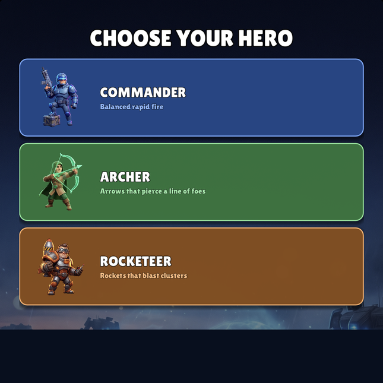

Math Practice Needs Fewer Worksheets and More Battles
A quick look at why MathWar turns arithmetic answers into movement, soldiers, and consequences.
Development notes about arithmetic gates, army growth, short sessions, and the ongoing attempt to make math drills feel less like laminated punishment.

A quick look at why MathWar turns arithmetic answers into movement, soldiers, and consequences.